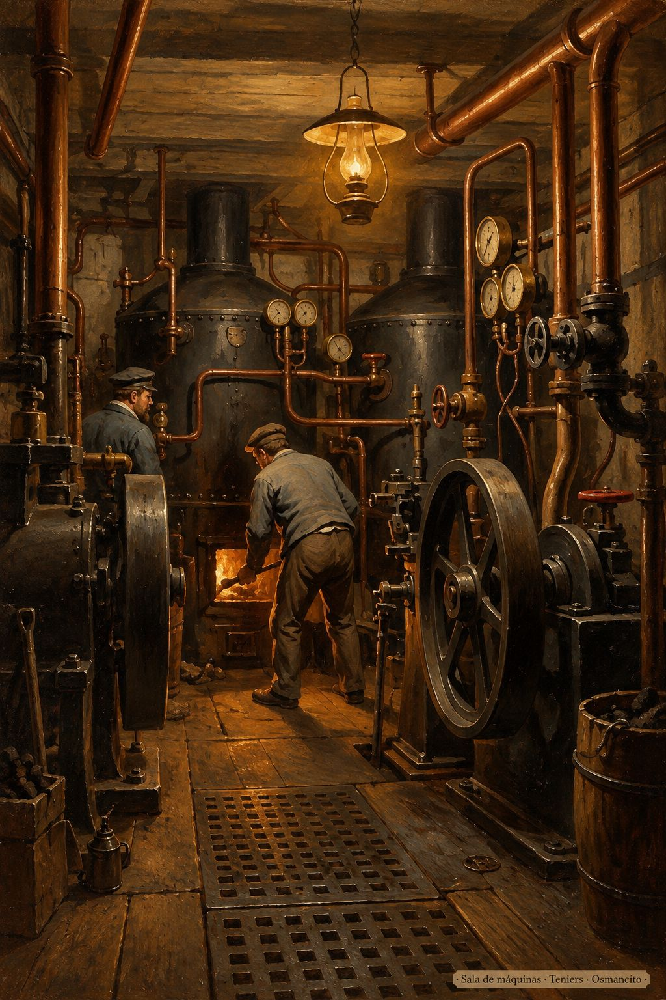

Sala de máquinas
La expresión "sala de máquinas" nombra el espacio de un barco que alberga los motores y otros equipos necesarios para que funcione. Aquí reúne las herramientas y el trabajo que sostienen el sitio: qué está en marcha, qué se terminó y con qué modelos se hizo.
Entradas
- Los motores: los modelos de lectura usados para traducir, revisar y comparar textos.